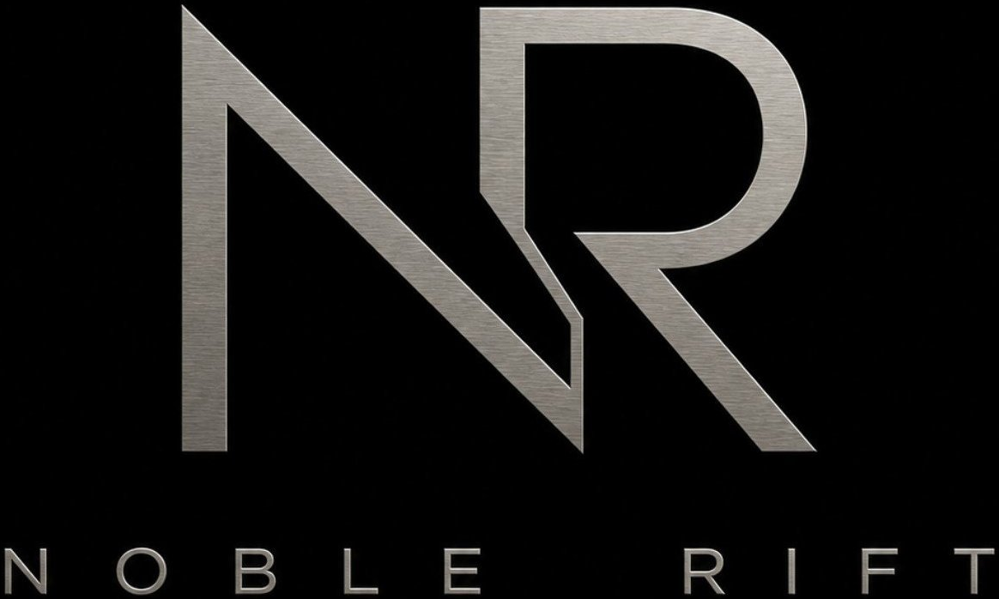

Noble Rift builds watches on controlled tension.
Every piece begins with a foundation that is deliberate and precise — proportion, material, and finish working exactly as expected. Nothing is accidental. Everything is resolved before disruption.
Then something breaks that control.
Not to disrupt blindly, but to introduce friction — a detail that doesn't belong at first glance, yet refuses to feel wrong. The rest of the watch is disciplined enough to hold it, until the contradiction no longer feels like one.
Restraint defines the design. Nothing extraneous. Nothing competing.
The goal isn't to shock — it's to create a double-take.
A watch that reads clearly, then shifts. Something familiar, then unexpected, resolving into something that feels inevitable.
Noble Rift doesn't ignore the rules of watch design.
It understands them well enough to bend them — and make that decision feel necessary.
The watches are made to please no one in particular.
Which is exactly why the right people can't look away.